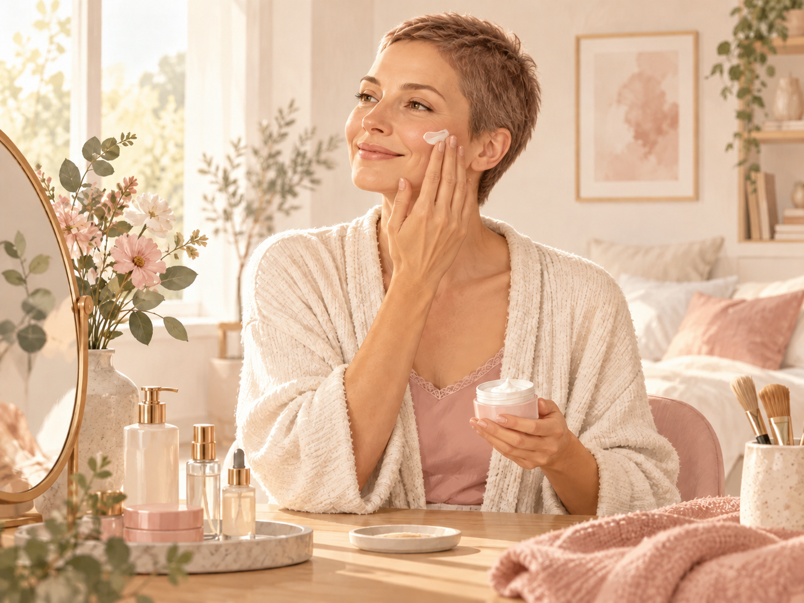
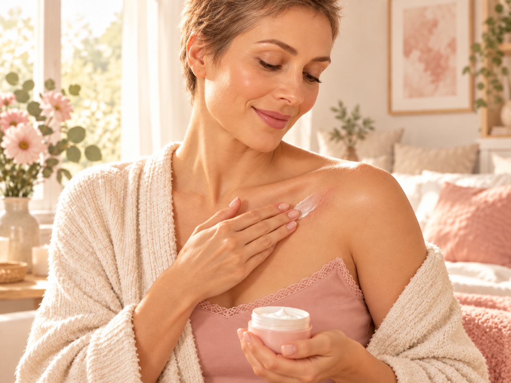

APRÈS LES TRAITEMENTS
Comment prendre soin de sa peau après les traitements ?
La fin des traitements ne signifie pas toujours que la peau retrouve immédiatement son état d’avant. Elle peut rester sèche, sensible, réactive ou marquée pendant plusieurs semaines ou plusieurs mois.
L’objectif après les traitements est souvent d’accompagner progressivement la peau pour retrouver du confort, renforcer la barrière cutanée et réintroduire les soins petit à petit.

Image générée par IA
1. Une peau qui peut rester fragile quelque temps
Après les traitements, certaines manifestations peuvent persister :
- sécheresse,
- tiraillements,
- sensibilité,
- rougeurs,
- inconfort,
- démangeaisons,
- changements de pigmentation,
- peau plus réactive qu’avant.
La récupération peut être progressive et différente d’une personne à l’autre.
Même après la fin des traitements, la peau peut avoir besoin de temps. Il n’est pas nécessaire de reprendre immédiatement une routine complexe.
Dans un premier temps, il peut être préférable de conserver une routine courte, douce et confortable.
Image générée par IA
Le matin
- Nettoyage doux,
- Sérum hydratant réparateur,
- Crème hydratante et/ou nourrissante,
- Contour des yeux,
- Protection solaire SPF50+,
- Soins des lèvres.
Le soir
- Nettoyage doux,
- Sérum hydratant réparateur,
- Crème hydratante et/ou nourrissante,
- Contour des yeux,
- Soins des lèvres.
Puis seulement ensuite, si la peau est confortable, on peut recommencer à introduire progressivement d’autres produits ou à en changer certains.
3. Réintroduire les actifs progressivement
Après plusieurs mois de routine très douce, on peut avoir envie de reprendre certains soins plus actifs.
Cela peut notamment concerner :
- la vitamine C,
- la niacinamide,
- les acides exfoliants,
- le rétinol.
Réintroduisez les actifs progressivement et arrêtez le produit s’il provoque des brûlures, des rougeurs ou un inconfort important.
Il n’existe pas forcément un délai identique pour tout le monde. La reprise dépend du traitement reçu, de l’état de la peau et de sa tolérance.
4. Ne pas négliger le soleil
Même après la fin des traitements, certaines personnes peuvent conserver :
- une sensibilité accrue au soleil,
- des rougeurs,
- des taches pigmentaires,
- un teint irrégulier.
Image générée par IA
Une protection solaire SPF50+ reste donc importante lorsque la peau est exposée.
Vous pouvez également compléter cette protection avec :
- un chapeau,
- des lunettes de soleil,
- la recherche de l’ombre,
- des vêtements couvrants lorsque cela est nécessaire.
5. Et les taches et changements de pigmentation ?
Les changements de pigmentation peuvent parfois mettre du temps à s’atténuer.
Dans un premier temps, il peut être utile de privilégier :
- une bonne photoprotection,
- une routine hydratante stable,
- une introduction progressive des produits ciblant les taches.
Si les taches persistent, évoluent ou deviennent gênantes, il est préférable de demander conseil à un dermatologue ou à un professionnel de santé avant d’utiliser des actifs plus puissants.
6. Cicatrices et zones fragilisées
Les interventions chirurgicales et certains dispositifs médicaux peuvent laisser des cicatrices ou des zones de peau plus fragiles.

Image générée par IA
Dès que la cicatrice est complètement fermée, sans croûte ni saignement, et lorsque votre équipe médicale vous y autorise, un massage adapté peut parfois aider à assouplir la zone.
Pensez également à :
- protéger la cicatrice du soleil,
- utiliser un soin adapté lorsque la cicatrisation le permet,
- surveiller son évolution.
Si la cicatrice devient douloureuse, très rouge, gonflée ou évolue de façon inhabituelle, parlez-en à votre équipe médicale.
7. Quand consulter ?
- une rougeur importante ou persistante,
- une douleur,
- une plaie qui ne cicatrise pas,
- une éruption inhabituelle,
- un gonflement,
- des démangeaisons importantes,
- une modification rapide de la peau.
Pour aller plus loin
Parce que chaque peau évolue différemment après les traitements, des articles plus spécifiques seront progressivement ajoutés sur Oncodermia.
Vous pourrez y retrouver des conseils dédiés aux taches pigmentaires, aux changements de pigmentation, aux cicatrices, au grain de peau irrégulier, aux rougeurs, à la sécheresse ou encore à la sensibilité cutanée.
Pour chaque problématique, des produits adaptés seront également présentés afin de vous aider à construire une routine plus ciblée, tout en respectant les besoins de votre peau.
LE PETIT MOT D’ONCODERMIA
Retrouver sa peau, petit à petit
Après les traitements, il n’est pas nécessaire de vouloir retrouver immédiatement la peau d’avant. L’essentiel est de lui laisser du temps, de l’écouter et de l’accompagner avec douceur.
« Prendre soin de soi, c’est aussi accepter que certaines choses demandent du temps. »
— Oncodermia